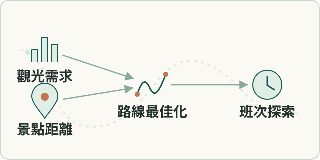
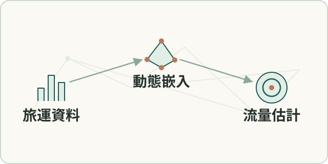
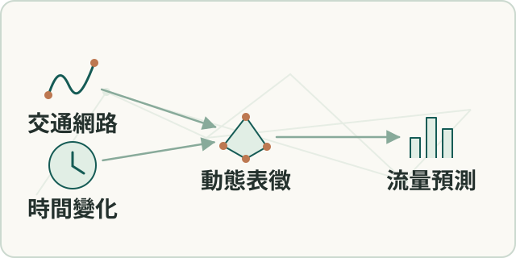
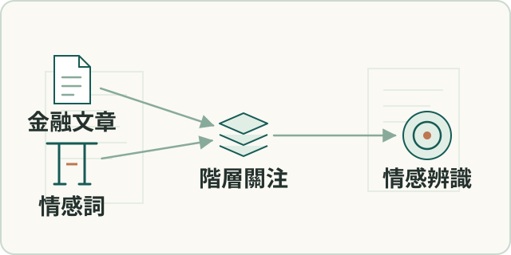
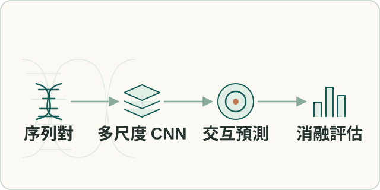
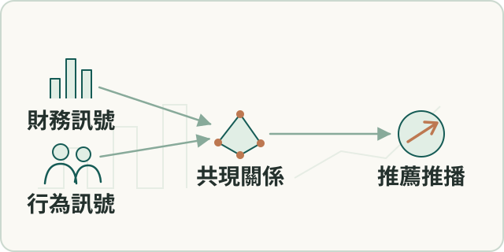
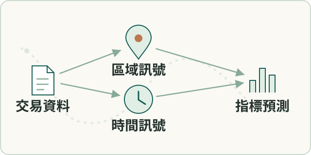
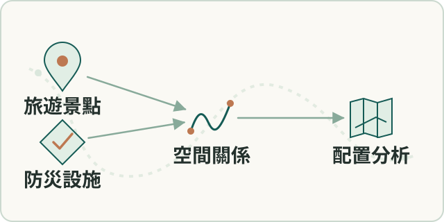
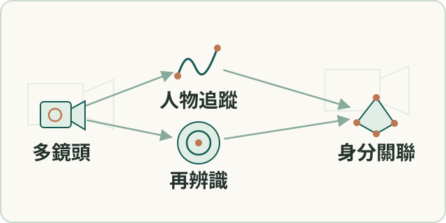
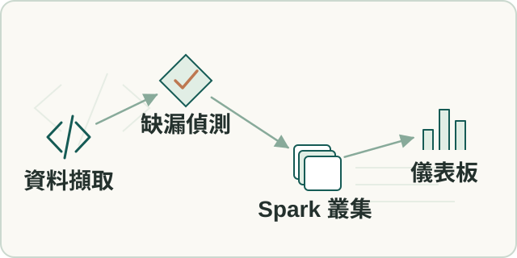

SELECTED WORK / COMPLETE DIRECTORY
專案
依領域整理的完整清單，也可以按證據紀錄年份瀏覽。日期表示有紀錄的年份，不代表專案起訖或交付日。
資料、診斷與場域交付
5 項
從資料品質與判讀邊界出發，建立可測試及交接的分析流程。
工業設備診斷方法
診斷產品線
 診斷鏈示意
診斷鏈示意
串接運轉偵測、異常分析、嚴重度與剩餘壽命估計，保留資料不足時的降級條件。
紀錄時間：2026 年診斷研究與開發紀錄
- 角色
- 本人負責領域方法、算法評估與品質判斷；產品實作由團隊協作。
- 階段
- 含已驗證流程與研究項目，不概括為全面上線。
相關模組 · 3
設備振動分析驗證
場域 POC
 振動驗證示意
振動驗證示意
以場域設備資料檢驗振動診斷及整合報告可行性，記錄資料限制和導入條件。
紀錄時間：2026 年 POC 紀錄
- 角色
- 本人主導方法與驗證問題；分析和整合由團隊協作。
- 階段
- 可行性驗證；正式驗收需另查。
大規模設備事件分析
場域分析
 事件分析示意
事件分析示意
依事件窗口選取資料，建立訊號分析、批次處理與現場工程師交接流程。
紀錄時間：2025 年分析紀錄
- 角色
- 本人參與分析策略、流程和人工診斷關卡設計。
- 階段
- 具分析與交接紀錄，不延伸為全面自動判診。
 出廠檢測示意
出廠檢測示意
把出廠檢測的操作情境轉成量測批次、判定、報告和驗收條件，協調測試版本與作業文件。
紀錄時間：2026 年測試與整合紀錄
- 角色
- 本人主責需求、領域及平台規格、驗收映射與交接；工程團隊和 AI agents 參與實作測試。
- 階段
- 已有 DQA 測試、測試版本與操作手冊；後續整合未合主線，現場校準與客戶驗收尚待完成。
設備電流資料複核與說明
場域分析
 電流複核示意
電流複核示意
針對既有分析疑點重查統計與判讀口徑，整理客戶說明版本。
紀錄時間：2026 年分析紀錄
- 角色
- 本人負責複核、論述及交付溝通。
- 階段
- 分析和說明已交付；不推定驗收或根因完全確認。
研究、空間分析與早期作品
11 項
研究發表、學位研究、課程及競賽；區分獨立研究與團隊成果。
訪區路線與離散程度分析
空間分析
 訪區路線示意
訪區路線示意
以地址點距離與路線最佳化方法估算訪區行程。
紀錄時間：2020 年實習實作紀錄
- 角色
- 本人完成實習期間的核心資料處理與路線方法。
- 階段
- 實習期間的分析與規劃實作。
動態公車路線與班次規劃
獨立專案

動態路線示意
結合觀光需求訊號、景點距離與路線最佳化，探索班次及路線規劃。
紀錄時間：2021 年建檔紀錄；專案期間待補
- 角色
- 本人進行資料處理、路線規劃與視覺化實作。
- 階段
- 探索性專案，未宣稱實際營運採用。
旅運需求預測研究（2021）
論文

旅運預測示意
研究動態嵌入方法在旅客流量估計中的應用。
紀錄時間：2021 年論文發表
- 角色
- 共同研究；此處呈現研究主題與發表成果。
- 階段
- 正式論文發表。
動態交通網路與流量預測（2024）
期刊論文

交通網路示意
研究動態交通網路表徵與捷運旅客流量預測。
紀錄時間：2024 年期刊發表
- 角色
- 共同研究；此處呈現研究主題與發表成果。
- 階段
- 正式期刊論文。
金融文本情感辨識研究（2020）
論文

文本情感示意
結合情感詞與階層式關注網路研究金融文章情感。
紀錄時間：2020 年論文發表
- 角色
- 共同研究；此處呈現研究主題與發表成果。
- 階段
- 正式研討會發表；前期研究計畫納入同一脈絡。

MCIENet 研究示意
設計多尺度卷積模型，從 DNA 序列預測三維染色質交互作用，並進行消融、跨資料集評估與模型解釋。
紀錄時間：2024 年碩士論文
- 角色
- 本人主導研究問題、架構、實驗、論文和程式整理；部分前處理整合第三方方法。
- 階段
- 學位研究完成。
E.SUN Fugle 金融資訊推薦
課程競賽

推薦流程示意
結合財務與使用者行為訊號，探索股票推薦及推播方法。
紀錄時間：2020 年競賽紀錄
- 角色
- 團隊共同完成；此處呈現團隊成果。
- 階段
- 課程競賽優勝。
PropGMAN 不動產時空分析
團隊競賽

時空分析示意
以區域與時間訊號研究土地價格和交易量預測。
紀錄時間：2022 年競賽紀錄
- 角色
- 三人團隊共同完成；此處呈現團隊成果。
- 階段
- 決賽作品與創意獎。
Taipei Dashboard 2025：旅遊與防災
黑客松

城市設施示意
分析旅遊景點周邊防災設施的空間配置。
紀錄時間：2025 年黑客松紀錄
- 角色
- 團隊共同完成；此處呈現團隊成果。
- 階段
- 決賽入選作品。
Horus 多鏡頭人物追蹤
畢業專題

人物再辨識示意
團隊整合人物追蹤、再辨識及臉部辨識；本人聚焦跨鏡頭人物再辨識。
紀錄時間：2020 年畢業專題紀錄
- 角色
- 本人主要負責再辨識模組；其他組件為團隊成果，基礎模型使用第三方方案。
- 階段
- 畢業專題完成。
Distributed Spark Recovery
課程專案

資料補全示意
課程團隊串接資料擷取、時序儲存、缺漏偵測、分散式模型與儀表板。
紀錄時間：2022 年課程專案
- 角色
- 本人負責 Spark cluster、GitHub 與展示影片；其餘模組由隊友負責。
- 階段
- 2022 年課程專案。
人與 AI 協作方法
3 項
把需求、證據、測試與人工審查放進持續運作的開發流程。
AI 協作開發治理
工程方法
 開發治理示意
開發治理示意
建立版本化工作指令、紀錄、每日監控、隔離修復分支與人工審查流程。
紀錄時間：2026 年流程運行紀錄
- 角色
- 本人設計流程、品質門檻並審查結果；AI agents 執行掃描、修復及測試，reviewer 決定合併與發布。
- 階段
- 具日常運行與修復分支紀錄；PR 等待人工審查不代表已合併或部署。
相關模組 · 1
工程文件與知識系統
團隊知識管理
 知識系統示意
知識系統示意
整理需求、設計、測試和版本文件的追溯關係，建立持續維護的內部文件入口。
紀錄時間：2026 年文件系統紀錄
- 角色
- 本人參與文件治理與溝通機制設計；內容和維護由團隊協作。
- 階段
- 具文件站與維護流程紀錄；採用效果待核對。
相關模組 · 1
交付追蹤與工程協作
工作流程
 協作流程示意
協作流程示意
以共同工作空間追蹤承諾、待決事項與交付證據，並在實習生合作中拆分任務和審查成果。
紀錄時間：2026 年交付協作紀錄
- 角色
- 本人負責議題收斂、領域判斷與協作指導；成果依團隊分工呈現。
- 階段
- 具工作空間與協作紀錄。
依現有證據的年份新到舊排列；同一年內不表示先後順序。